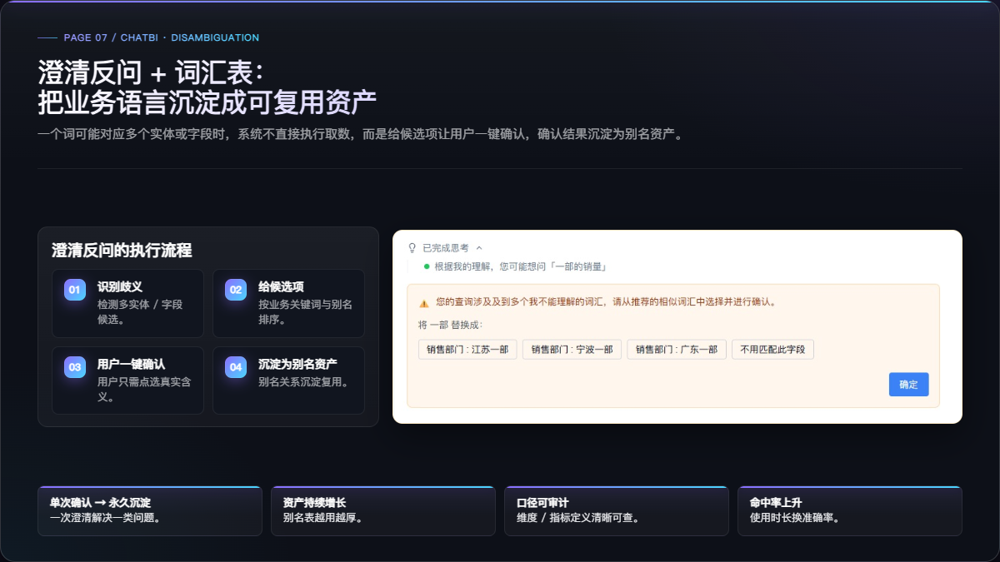
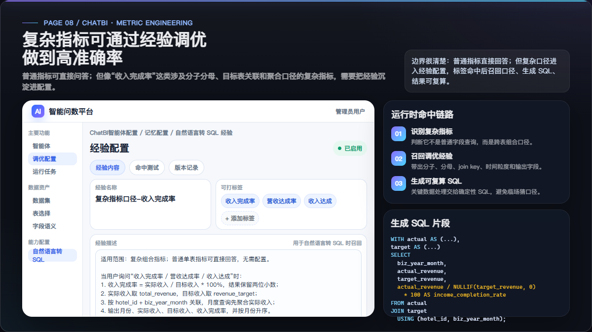
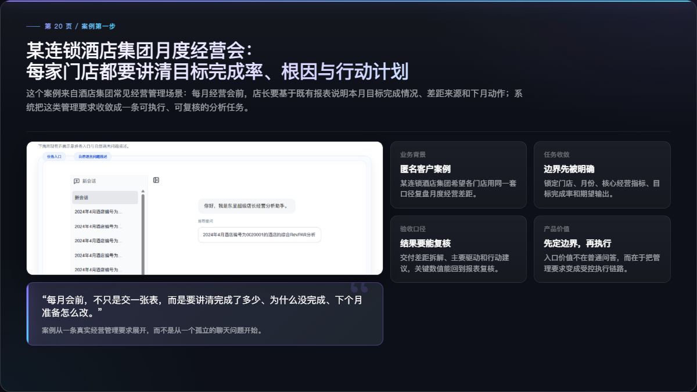
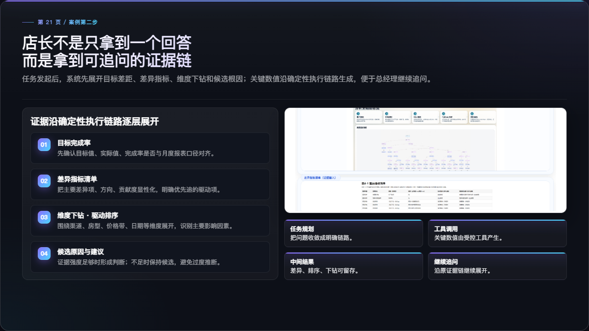
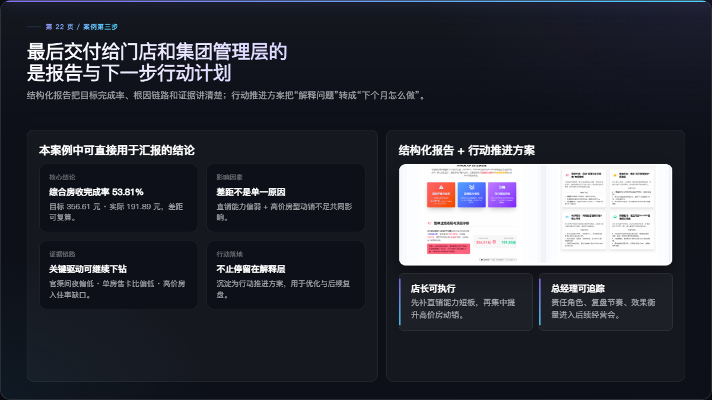

解决的问题
原图像普通结果页，不能说明“为什么需要澄清反问”。
本版处理
保留流程卡片，主图展示候选项、一键确认和系统提示。
对外表达
先澄清、再确认，确认结果进入组织词汇资产。

从普通问数结果截图，替换为用户端“候选确认”截图，突出业务词汇歧义如何被一次确认并沉淀为别名资产。
原图像普通结果页，不能说明“为什么需要澄清反问”。
保留流程卡片，主图展示候选项、一键确认和系统提示。
先澄清、再确认，确认结果进入组织词汇资产。

不再只放配置入口截图，而是直接说明：普通指标可直接回答，复杂组合指标通过经验配置提升准确率。
“收入完成率”这类跨表指标，不能让模型每次临场猜口径。
把经验描述、标签命中、口径召回和可复算查询放到一页里讲清。
复杂指标不是不可问，而是需要把口径经验工程化。

用“某连锁酒店集团月度经营会”进入案例，避免一上来就是总经理要求，更像真实交付过的客户案例。
原开头太像内部拆解，不够自然，也不够像对外客户故事。
先讲经营会要求，再讲系统如何收敛为可执行分析任务。
不是从聊天问题开始，而是从真实管理要求开始。

把主案例的分析链路素材放进来，说明系统给出的不是孤立答案，而是可以继续下钻和复核的证据链。
原先复用任务列表图，和“任务到证据”的页面主题不够匹配。
左侧讲目标差距、差异指标、维度下钻和候选原因。
继续追问不是重来一遍，而是沿原证据链继续展开。

用结构化报告和行动推进方案收口，让案例从“分析解释”走到“门店可执行、管理层可追踪”。
原页更像占位图，缺少可见的正式交付物。
补入报告与行动卡片截图，并把英文标签统一改成中文。
最终价值是“结论、证据、动作”的完整闭环。
